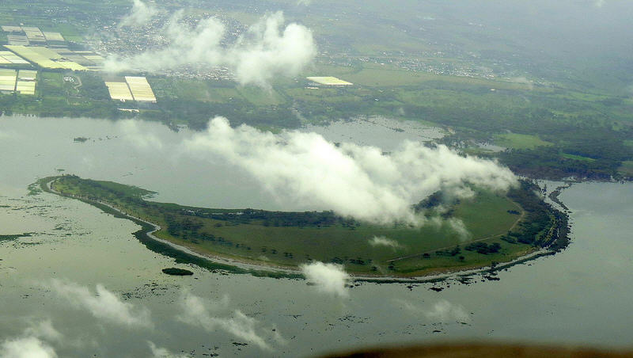
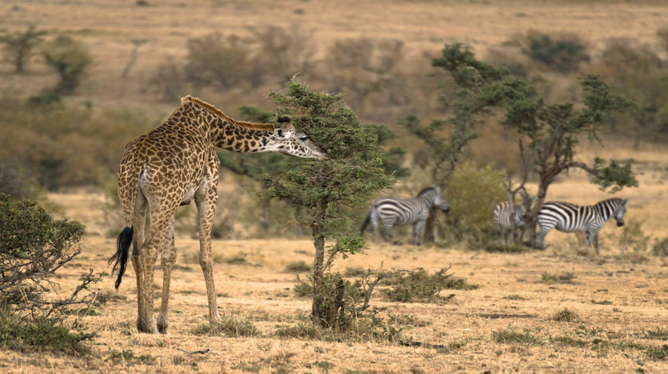
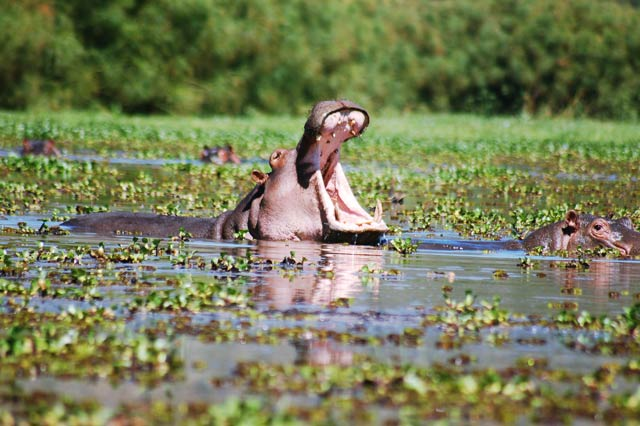
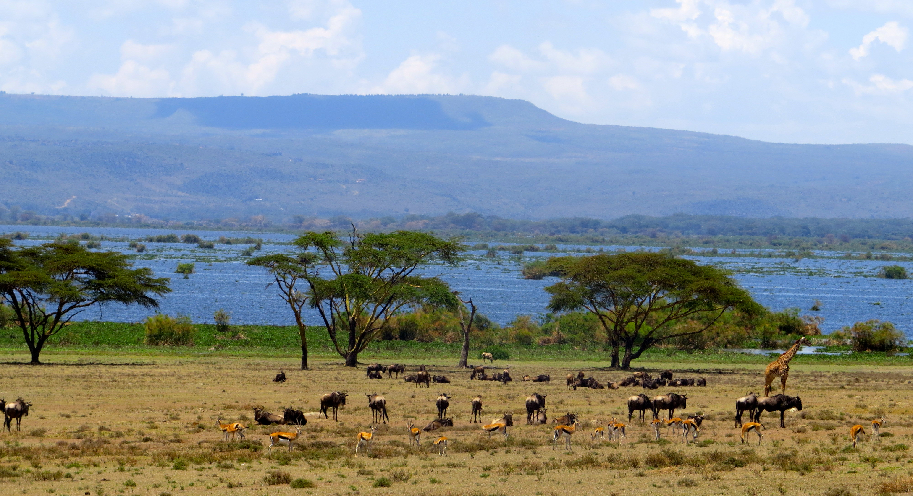
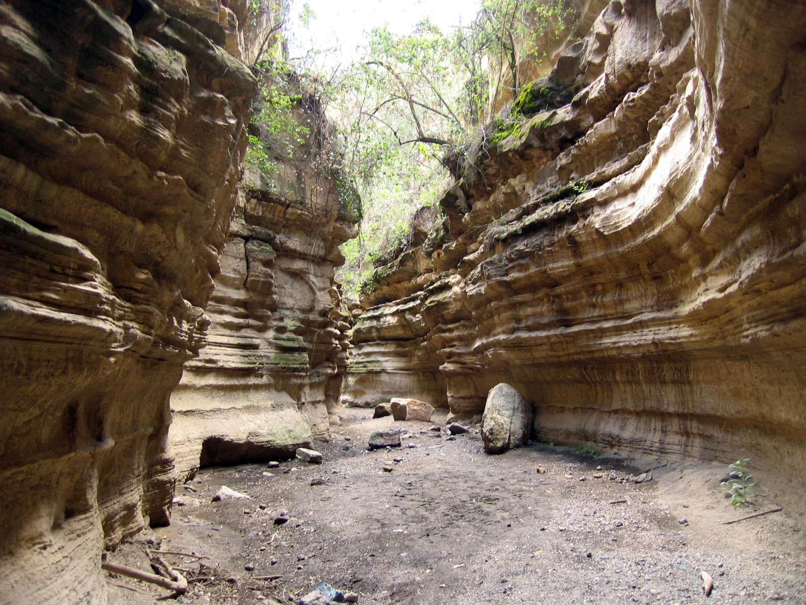

Located between beautiful Lake Naivasha and the twin Longonot and Suswa Volcanoes, Hell's Gate is one of Africa's most visually stunning parks. The Park is famous for its natural hot geysers, its eagle and vulture breeding grounds, and the variety of activities that visitors have access to during their visit. Hiking, cycling, and rock climbing are just a few of the options available to visitors.






DAY 1: NAIROBI – NAIVASHA
Arrive JKIA, you will be met by our representative and briefed on the safari. Depart Nairobi and drive down to the floor of Great Rift Valley and into Lake Naivasha. Upon arrival proceed to Hell’s Gate National Park, you can hike the canyons and mountains, rent bikes and enjoy a leisurely cycle, go horse riding. Rock climbing is also available. A visit to Hell's Gate offers a vastly different experience than you'll find anywhere else in East Africa. What the park lacks in game-viewing opportunities, it makes up for with its alien landscape and the freedom to explore it however you see fit. Lunch at the lodge. Afternoon proceed for a boat ride in this fresh water lake to view the hippos. This is a beautiful freshwater lake, fringed by thick papyrus is almost 13 km's across, but its waters are shallow with an average depth of five meters. The waters of the lake draw a great range of game to these shores. Visit the Crescent Island. There is just one “Crescent Island Game Park”. It is simply one of the most beautiful parks in Kenya, often called Naivasha’s best kept secret. It is private, secure and patrolled by Guides who can accompany anyone who wishes for guided walk. Surrounded by water, it is actually a peninsular. Dinner and overnight at Lodge.
DAY 2: LAKE NAIVASHA – NAIROBI
Leisurely breakfast at the lodge. Depart for Nairobi with a stop at the Great Rift Valley View point. On arrival drop off at the airport for final departure.
END OF SAFARI